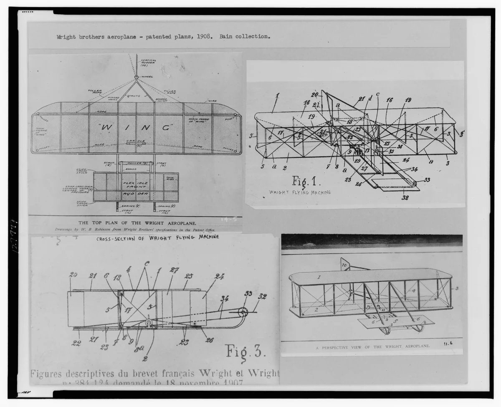
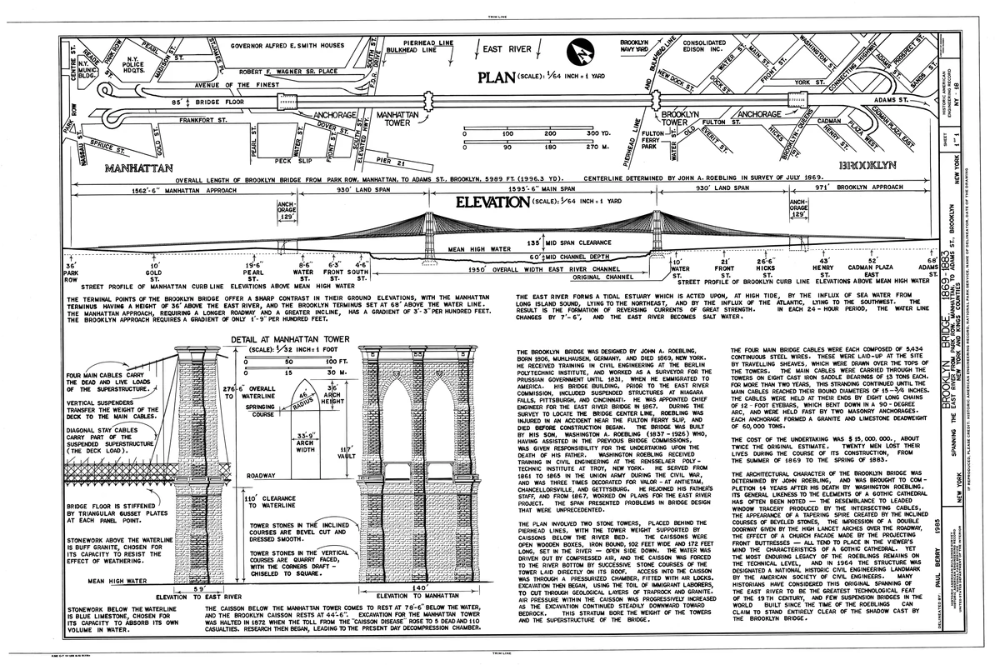
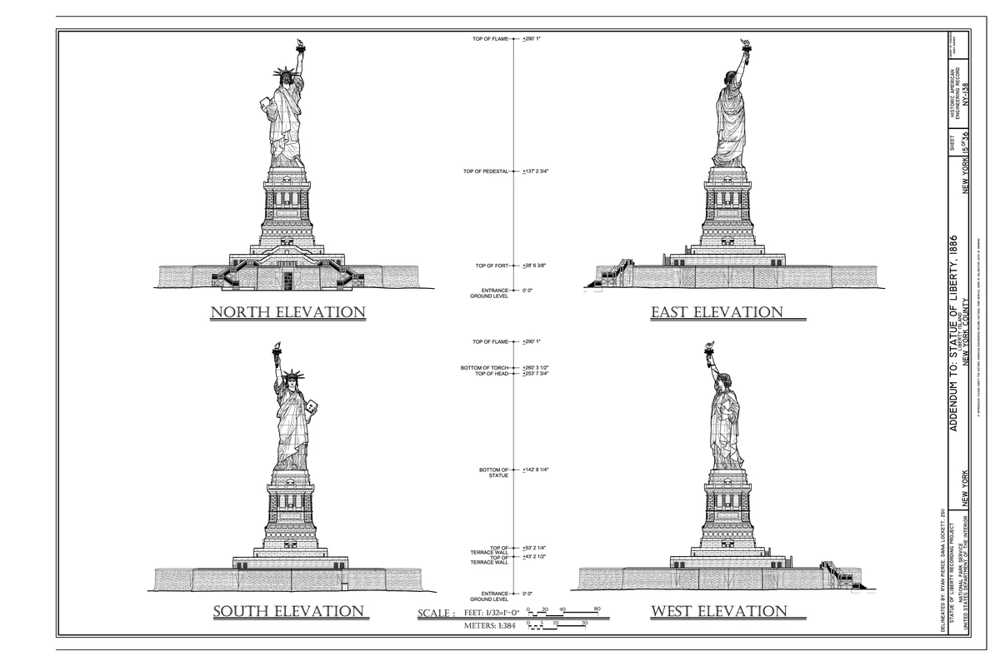

Sheet A-01 · planning before modeling
Blueprint Drafting Studio
A 3D model begins as decisions on a flat sheet. Draw the same object from the front, top, and right; add the measurements another builder would need; then carry the plan into any CAD tool.
Orthographic viewsScale & unitsDimensionsLine language
Compare the object with its flat views
Trace the width and height from the object into the plan and front elevation.

Drawings from history
Famous designs, readable plans
These public-domain drawings show how a flat sheet can explain a real object or structure. Open each image to inspect its views.


Try it: Choose one sheet and name two views you would need to model its subject. What dimension or detail would you still have to find?
Design brief
Plan a desk organizer that can actually be built
Your client needs a compact organizer with a phone slot and a pencil compartment. It must fit inside a 120 × 90 × 80 mm envelope. Your sheet must communicate the outside shape, one hidden feature, and enough dimensions for a classmate to recreate it.
- Draw three aligned views.
- Dimension overall width, height, and depth.
- Clarify one hidden edge or centerline.
- Review the plan before opening 3D CAD.
Interactive drawing board
Draft the plan
Choose a tool, then draw in the active view. The board snaps to a 10 mm grid. Keyboard: V select, L line, R rectangle, D dimension, Delete removes a selected shape.
Front view ready. Select a drawing tool.
Drawing language
Read a drawing before you make one
Technical drawing is a compact agreement between the designer and the builder.
Object line
Thick, continuous lines show edges you can see.
Hidden line
Short dashes reveal an edge behind the visible surface.
Centerline
Long-short marks locate symmetry, holes, and rotation axes.
Dimension line
Arrowheads and numbers state the intended size. Never measure the screen.
Cross-platform transfer
The concepts stay; the buttons move
Start with the verb you need, then find that verb in your available tool. Browser, Chromebook, Windows, macOS, Linux, tablet, and paper workflows can all produce valid evidence.
| Design move | Browser studio | Parametric CAD | Sketch-based CAD | Paper fallback |
|---|---|---|---|---|
| Make exact geometry | Grid + line/rectangle | Sketch + constraint | Line/shape + typed size | Scale ruler + triangle |
| Describe size | Dimension tool | Dimension constraint | Dimension/measurement | Extension and dimension lines |
| Show three sides | Front/top/right tabs | Drawing workspace | Scenes or standard views | Aligned orthographic views |
| Keep work editable | Auto-saved browser draft | Native project/history | Native project/layers | Dated drawing sheet |
Tool examples and access notes
- Chromebook/browser: Onshape, Tinkercad, SketchUp for Web, or this studio.
- Windows/macOS: Fusion, Onshape, FreeCAD, SketchUp, or LibreCAD for dedicated 2D drafting.
- Linux: FreeCAD and LibreCAD provide native options; Onshape runs in a modern browser.
- Tablet or no account: Use graph paper or a drawing app with grid and ruler tools. Photograph or export the finished sheet.
Interface names and platform support can change. Your assessment is the drawing logic and evidence, not a particular brand.
3D handoff
Turn the approved plan into a model
- Choose the base view. Sketch the front or top outline on the matching plane.
- Constrain it. Enter the dimensions from the approved sheet; do not eyeball the grid.
- Give it depth. Extrude using the depth shown in the right or top view.
- Add features. Place the phone slot and pencil compartment from their dimensions.
- Inspect and revise. Compare front, top, and right views with the blueprint before export.
Evidence to submit: the drawing sheet, an editable CAD file, three matching model views, and one sentence naming a revision you made after comparison.